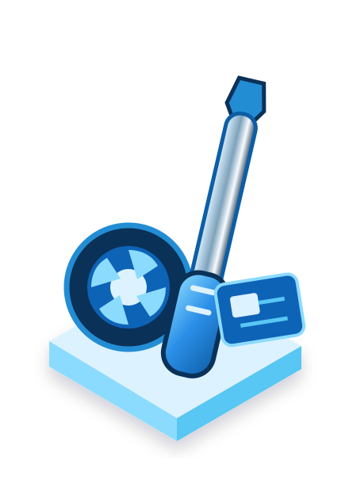
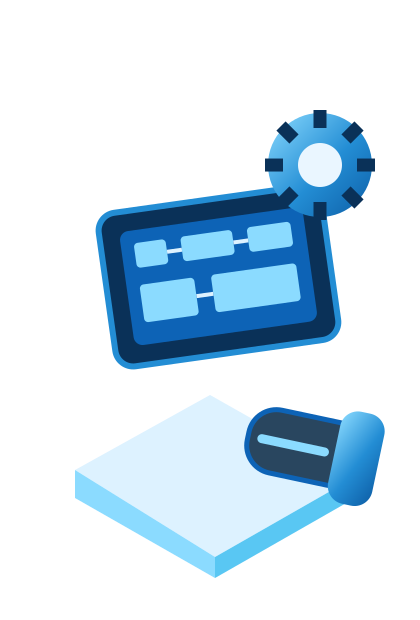
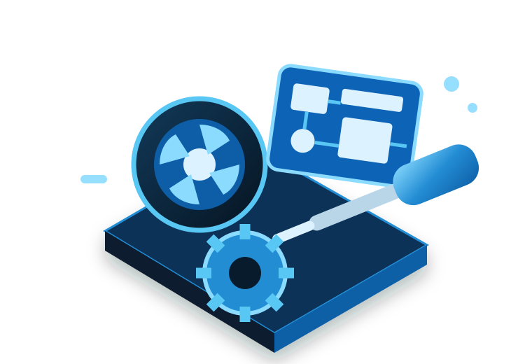

Reparación Dyson para clientes de Pamplona
Reparamos tu Dyson , estés donde estés en Pamplona
Diagnóstico gratuito
Piezas originales
Recogida en Pamplona
Pamplona y área metropolitanaRecogemos tu equipo Dyson donde estés en Pamplona
Lunes a viernes · 09:30–18:00Sábados, domingos y festivos: cerrado.
Presupuesto de reparación sin compromiso
Reparación Dyson con 6 meses de garantía
Reparación Dyson desde 2 h
Cuando lo necesitas cuanto antes
Reparación Dyson desde 2 horas, según la avería.
Según la avería. El tiempo depende del problema detectado, la intervención necesaria y la disponibilidad de piezas. Primero revisamos el equipo y te damos las opciones.
✓
Diagnóstico gratuito.
Revisamos qué ocurre antes de decidir la reparación.
Revisamos qué ocurre antes de decidir la reparación.
✓
Presupuesto sin compromiso.
Conoces la intervención antes de continuar.
Conoces la intervención antes de continuar.
✓
Garantía de 6 meses.
En cada reparación realizada.
En cada reparación realizada.
Confianza
Opiniones sobre nuestro servicio técnico Dyson para clientes de Pamplona.
Qué reparamos
Reparamos aspiradoras, secadores y purificadores Dyson.
Reparamos aspiradoras, secadores de pelo, purificadores de aire y ventiladores Dyson en Pamplona.
Aspiradoras de mano
Dyson V12 Detect Slim, V15 Detect, Gen5 Detect, Cyclone V10, V8 Absolute, V7, Omni-glide y PencilVac.
Aspiradoras de suelo
Dyson WashG1 para limpieza húmeda/seca y modelos Upright & Cylinder con cable.
Secadores de pelo
Dyson Supersonic, Supersonic Nural, Supersonic Professional y Supersonic R Series.
Purificadores y ventiladores
Dyson Purifier Cool, Air Multiplier y Hot+Cool.

Diagnóstico claro.
Piezas originales.
Recogida en Pamplona.
¿Por qué DyCenter?
Repara tu Dyson antes de sustituirlo.
Diagnóstico gratuito
Te indicamos qué le ocurre a tu equipo Dyson antes de realizar la reparación.
Piezas originales Dyson
Nada de recambios genéricos que duren cuatro meses.
Recogida y entrega
Recogemos tu equipo Dyson en Pamplona y te lo devolvemos reparado.
Presupuesto sin compromiso
Decides tú si reparamos, sin sorpresas en la factura final.
Cómo trabajamos
Así funciona nuestra reparación Dyson en Pamplona.
01
Cuéntanos la avería
Por WhatsApp, teléfono o formulario nos indicas qué equipo Dyson tienes y qué avería presenta.
02
Recogemos tu equipo
En Pamplona pasamos a recogerlo o puedes traerlo a nuestro servicio técnico ubicado en Madrid.
03
Diagnóstico y presupuesto
Revisamos el equipo y te decimos qué hace falta, sin compromiso.
04
Reparamos y te lo devolvemos
Realizamos la reparación y te explicamos la intervención efectuada.
Preguntas frecuentes
Preguntas frecuentes sobre reparación Dyson.
¿Tenéis servicio técnico en Pamplona?
Nuestro servicio técnico está ubicado en Madrid. Para clientes de Pamplona ofrecemos servicio de recogida y entrega, para que puedas reparar tu equipo Dyson sin desplazarte hasta nuestro local.
¿El diagnóstico es gratuito?
Sí. El diagnóstico inicial de tu equipo Dyson no tiene coste.
¿Realmente puede estar reparado en 2 horas?
Puede ser posible según la avería. El plazo depende del problema detectado, de la intervención necesaria y de la disponibilidad de piezas.
¿Qué equipos Dyson reparáis?
Reparamos aspiradoras de mano y de suelo, secadores Supersonic, purificadores de aire y ventiladores Dyson.
¿La reparación tiene garantía?
Sí, todas nuestras reparaciones cuentan con 6 meses de garantía.
¿El presupuesto tiene compromiso?
No. Te damos el presupuesto antes de reparar y decides tú si seguimos adelante.
Servicio técnico Dyson
Servicio técnico y reparación Dyson en Pamplona.
Los equipos Dyson están diseñados para ofrecer un alto rendimiento y muchas averías pueden repararse. En DyCenter diagnosticamos el problema antes de darte un presupuesto, tanto en aspiradoras como en secadores, purificadores y ventiladores.
Trabajamos con aspiradoras V12 Detect Slim, V15 Detect, Gen5 Detect, V10, V8, V7, Omni-glide, PencilVac, WashG1 y modelos Upright & Cylinder; también con Supersonic, Supersonic Nural, Supersonic Professional, Supersonic R Series, Purifier Cool, Air Multiplier y Hot+Cool. Si estás en Pamplona o alrededores, disponemos de servicio de recogida.
¿No sabes si merece la pena reparar tu Dyson? Indícanos el tipo de equipo, el modelo y la avería para poder orientarte antes de decidir.